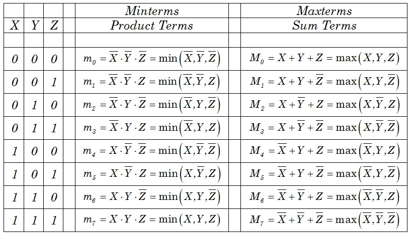

Canonical Form – In Boolean algebra,Boolean function can be expressed as Canonical Disjunctive Normal Form known as minterm and some are expressed as Canonical Conjunctive Normal Form known as maxterm .
In Minterm, we look for the functions where the output results in “1” while in Minterm we look for function where the output results in “0”.
We perform Sum of minterm also known as Sum of products (SOP) .
We perform Product of Maxterm also known as Product of sum (POS).
Boolean functions expressed as a sum of minterms or product of maxterms are said to be in canonical form.
Standard Form – A Boolean variable can be expressed in either true form or complemented form. In standard form Boolean function will contain all the variables in either true form or complemented form while in canonical number of variables depends on the output of SOP or POS.
A Boolean function can be expressed algebraically from a given truth table by forming a :
- minterm for each combination of the variables that produces a 1 in the function and then taking the OR of all those terms.
- maxterm for each combination of the variables that produces a 0 in the function and then taking the AND of all those terms.
Truth table representing minterm and maxterm –

From the above table it is clear that minterm is expressed in product format and maxterm is expressed in sum format.
Sum of minterms –
The minterms whose sum defines the Boolean function are those which give the 1’s of the function in a truth table. Since the function can be either 1 or 0 for each minterm, and since there are 2^n minterms, one can calculate all the functions that can be formed with n variables to be (2^(2^n)). It is sometimes convenient to express a Boolean function in its sum of minterm form.
- Example – Express the Boolean function F = A + B’C as a sum of minterms.
- Solution –
A = A(B + B’) = AB + AB’
This function is still missing one variable, so
A = AB(C + C’) + AB'(C + C’) = ABC + ABC’+ AB’C + AB’C’
The second term B’C is missing one variable; hence,
B’C = B’C(A + A’) = AB’C + A’B’C
Combining all terms, we have
F = A + B’C = ABC + ABC’ + AB’C + AB’C’ + A’B’
But AB’C appears twice, and
according to theorem 1 (x + x = x), it is possible to remove one of those occurrences. Rearranging the minterms in ascending order, we finally obtain
F = A’B’C + AB’C + AB’C + ABC’ + ABC
= m1 + m4 + m5 + m6 + m7
SOP is represented as Sigma(1, 4, 5, 6, 7) - Example – Express the Boolean function F = xy + x’z as a product of maxterms
- Solution –
F = xy + x’z
= (xy + x’)(xy + z)
= (x + x’)(y + x’)(x + z)(y + z)
= (x’ + y)(x + z)(y + z)
x’ + y = x’ + y + zz’
= (x’+ y + z)(x’ + y + z’) x + z
= x + z + yy’
= (x + y + z)(x + y’ + z) y + z
= y + z + xx’
= (x + y + z)(x’ + y + z)
F = (x + y + z)(x + y’ + z)(x’ + y + z)(x’ + y + z’)
= M0*M2*M4*M5
POS is represented as Pi(0, 2, 4, 5) - Example –
F(A, B, C) = Sigma(1, 4, 5, 6, 7)
F'(A, B, C) = Sigma(0, 2, 3) = m0 + m2 + m3
Now, if we take the complement of F’ by DeMorgan’s theorem, we obtain F in a different form:
F = (m0 + m2 + m3)’
= m0’m2’m3′
= M0*M2*M3
= PI(0, 2, 3) - Example – Convert Boolean expression in standard form F=y’+xz’+xyz
- Solution – F = (x+x’)y'(z+z’)+x(y+y’)z’ +xyz
F = xy’z+ xy’z’+x’y’z+x’y’z’+ xyz’+xy’z’+xyz
Product of maxterms –
Each of the 2^2n functions of n binary variables can be also expressed as a product of maxterms. To express a Boolean function as a product of maxterms, it must first be brought into a form of OR terms.
Conversion between Canonical Forms –
The complement of a function expressed as the sum of minterms equals the sum of minterms missing from the original function. This is because the original function is expressed by those minterms which make the function equal to 1, whereas its complement is a 1 for those minterms for which the function is a 0.
Conversion in standard form –
The two canonical forms of Boolean algebra are basic forms that one obtains from reading a given function from the truth table. These forms are very seldom the ones with the least number of literals, because each minterm or maxterm must contain, by definition, all the variables, either complemented or uncomplemented.